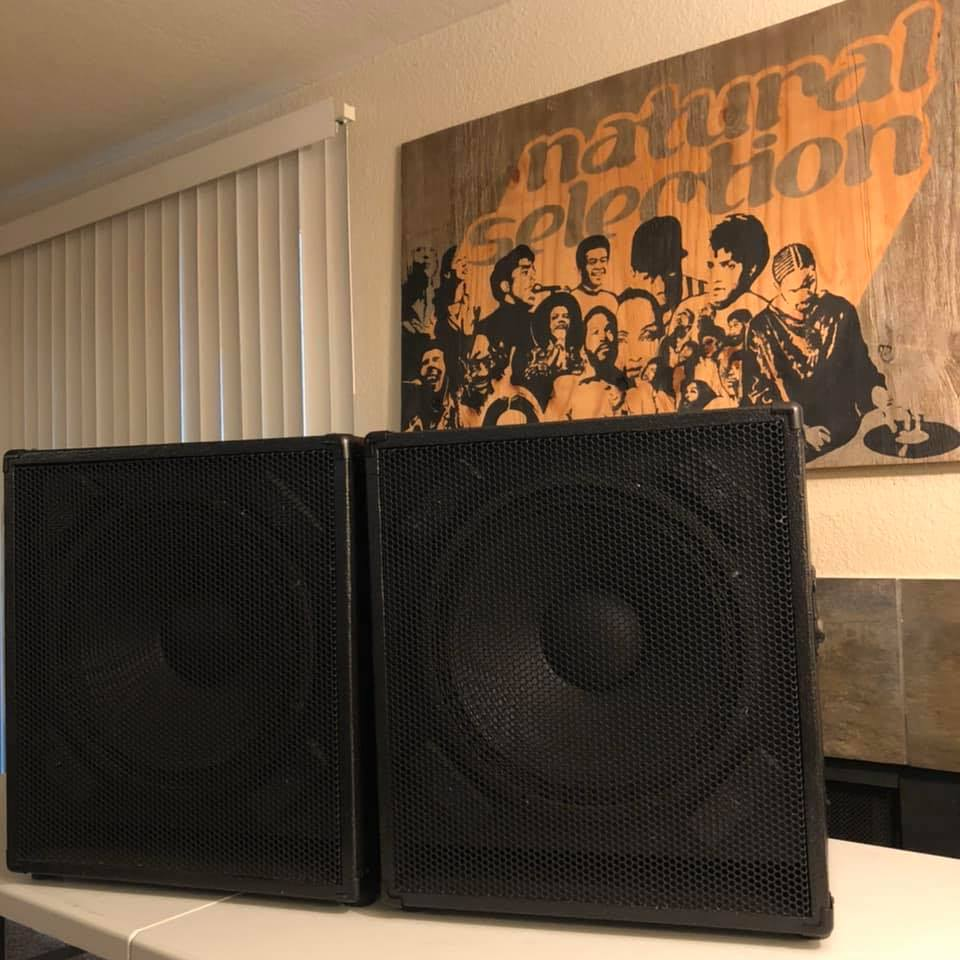

Subwoofer Design Study
NSC15 Subwoofer Design and Build Study


Natural Selection Compact 15” Subwoofer 1,000 Watts RMS, 4” Voice Coil, 8 Ohms
Concept
I remember coming across the webpage of a speaker aficionado’s personal mission, to expose the frequency fraud of a high end manufacturer’s Acoustimass home theater system. He proved that the subwoofer in the system wouldn’t produce frequencies below 40Hz. That was definitely not low enough for home theater, but the system still sounded loud, even with its small 6" woofers, and compact enclosure.
Studio Monitor Placement and Acoustical Treatment of a Bedroom
Monitor Placement Study
Compromises are a part of life, and the best strategy is not to avoid them, but to make ones that give you the most benefit, for the least tradeoff. There are so many incredible producers out there, and a lot don’t have the resources to design a critical listening room from scratch. This study details monitor placement, and acoustical treatment, of a rectangular apartment bedroom, which is being devoted fully to music production, mastering, and DJing.